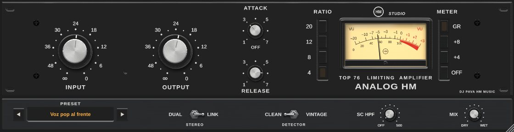
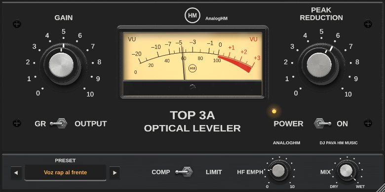
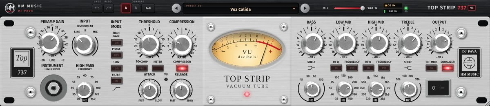

por Dj Pava Hm Music
Compresores, ecualizadores, canales de consola, micrófonos virtuales y herramientas para voz, mezcla y master. Cada uno se descarga por separado o todos juntos en un paquete.
Paquete completo, última versión. Windows: VST3 de 64 bits. macOS: VST3 y AU, Apple Silicon e Intel.



Cada tarjeta muestra la interfaz real del plugin. Pulsa la imagen para ver los detalles.
No hay plugins con ese nombre.
Los 27 plugins en formato VST3 de 64 bits. Funciona en FL Studio, Ableton Live, Cubase, Reaper, Studio One y cualquier DAW con VST3.
Paquete Windows (.zip)Los 27 plugins en VST3 y AU (para Logic Pro y GarageBand). Un solo archivo para Apple Silicon e Intel.
Paquete macOS (.zip)Las descargas salen de las versiones publicadas en GitHub. Ver todas las versiones y notas de cambios.
.vst3 a C:\Program Files\Common Files\VST3\.vst3 a ~/Library/Audio/Plug-Ins/VST3/ y los .component a ~/Library/Audio/Plug-Ins/Components/xattr -cr ~/Library/Audio/Plug-Ins/VST3/Top*.vst3 ~/Library/Audio/Plug-Ins/Components/Top*.componentAnalogHM es la marca de fabricante de Dj Pava Hm Music. Cada plugin tiene nombre, panel y motor de sonido propios, pensados para que suenen y se manejen como equipo de estudio real.
Los ecualizadores pasivos y los canales se calculan desde el circuito (resistencias, bobinas, condensadores), no con curvas aproximadas.
Los modelos analógicos trabajan de 4x a 8x y en doble precisión, para que la saturación no ensucie los agudos.
Las perillas, el metal y los VU se generan con un renderizador 3D propio. Por eso los plugins pesan poco.
Nombres, logotipos y paneles originales. AnalogHM no está afiliado a ningún fabricante de equipos ni de software.